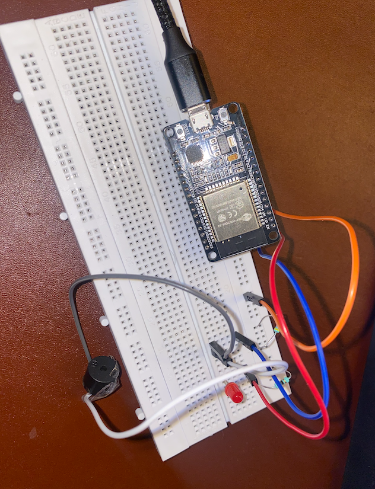
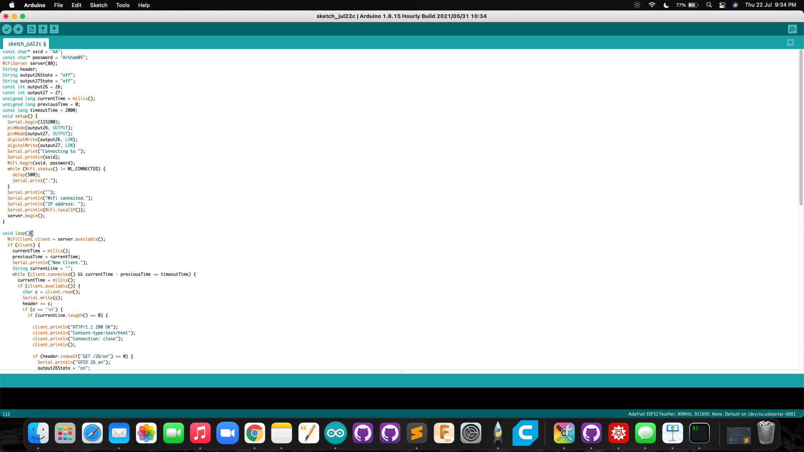
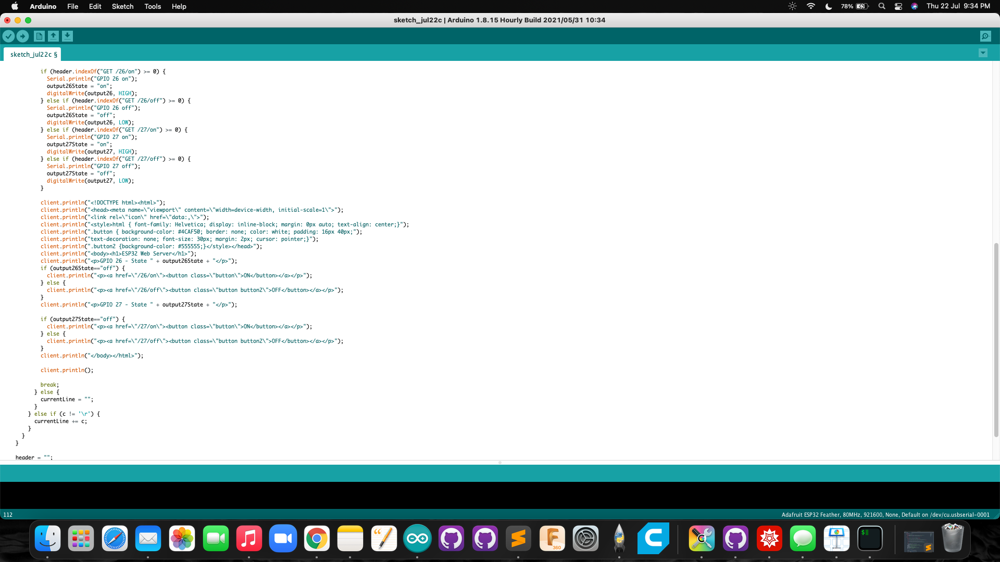

IOT and networking devices : Assignment:
For this assignment I am controlling a buzzer and a LED with esp 32 over local server .
I have attaached the photo of the following
photo of the circuit:

Screenshot of the code


Video of the circuit
VIDEO
Code for copy-paste
#include
GPIO 26 - State " + output26State + "
");ON
");OFF
");GPIO 27 - State " + output27State + "
");ON
");OFF
");